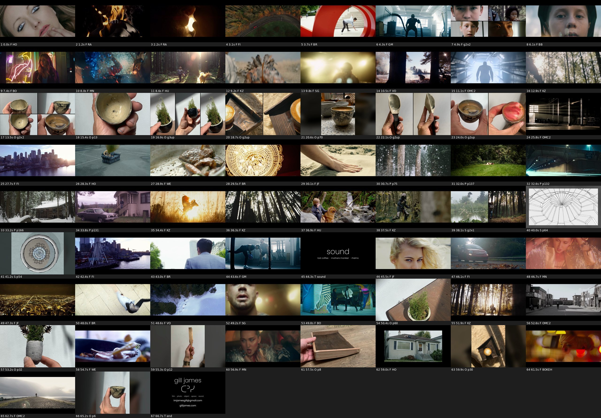

71 s · 67 shots · film 51% · object 30% · space 6% · photo 5% · type 7% · cut to lost coffee, "to go" (draft audio)
download the video · full shot list

| End card: email and URL lines touch | Leading raised from 85 px to 130 px between the two 60 px lines. The whole card block was moved up to make room. Checked at full res: clear gap between the descenders of "imjamesgill@gmail.com" and the ascenders of "gilljames.com". |
| 0:10 runner in a building, blown out | Replaced with the sunlit snow forest and smoke from Verona's Obsession (0:10.5). Same beat. |
| 0:28 runner in the city, flare and overexposure | Replaced with the armchair dropping onto the tennis court from Hey Ocean! "Sleepwalker" (0:28.3). The other armchair shot later in the reel was swapped for the snow-forest aerial from Verona's Obsession (0:48.6), so the armchair appears only once. |
| 0:33 woman on the beach, flat | Replaced with the snow cabin still from Gill's stills pages (0:33.2). |
| 0:37 legs by a window, muddy | Replaced with the armoured knight running through the forest from "Weird Kid" (0:37.5). It leads straight into the pond/forest split. |
| 0:22 dark wood handle half lost in shadow | Dropped. Replaced with the well-lit speckled cup on the counter, whole photo at full height (0:20.6, 1.54 s). |
| 0:34-0:35 red vertical line on the left edge | The "Weird Kid" source has a 2 px red column on its left edge. Every film source is now trimmed by 6 px on each side before scaling. The left edge measures (129, 99, 64) RGB, matching the scene; it was (140, 0, 4). |
| 0:39-0:40 spatial boards as small floating boxes | Dome wireframe and plan are now shown like the product heroes: full height (or full width for the wide dome page) over a blurred, darkened copy of themselves filling 16:9 (0:40.0, 0:41.2). |
| Product stacks feel close to 1.0 s | Every product shot is now at least 2.5 beats (about 1.5 s). Stacks are 3 beats (1.84 s). The second cup hero was dropped from the object section to make room, and three 1-beat film shots in the climax went, so the length and the hit points are unchanged. |
| 0:14 feathered staff, B&W crushes the detail | Cut. No B&W product photos are left in the reel. |
| 0:25 ceramic rim, chromatic aberration and blur | Cut (archive img #59 scored lowest on sharpness). |
| 0:26 white vase out of focus | Cut (A&W milk-jug frame). |
| 0:27 wood tray sliver crop | The same carved tray and latte now appear as a full-height 2-panel stack, two angles (0:19.7, 1.84 s), plus a whole-photo hero of the tray from above (0:59.9, 1.54 s). |
| 0:31-0:32 mossy object micro-flash after a paddle pan | The same moss cup now gets a 3-panel stack, three angles, for 1.84 s (0:16.9). A second moss cup is a 1.54 s 16:9 hero (0:50.4). No product is on screen for less than 1.5 s. |
| 0:34 cup in hand, dark B&W silhouette | Cut and replaced with sharp, daylight colour photos of the same cups (0:15.4, 1:05.2). Nothing was brightened. |
| 0:49 cup too small in a 3-way split | The 3-way split was removed. Cups now fill the frame height. |
| 1:04 dark cup silhouette | Cut. The reel now ends on a sharp colour cup photo (1:05.2) before the end card. |
| 0:02 driving POV, generic | Cut. 0:03.1 is now the FIAT aerial of the winding road. |
| 0:19 shower, soft | Cut. |
| 0:20 and 0:53 fire, used twice, muddy | Both cut. The only fire left is the burning record that Gill liked. |
| 0:21 beach woman, flat grade | Cut. |
| 0:55 hands with ring, soft | Cut. |
| Keep: 0:04 burning record + silhouette kiss | Both kept as the first two "film" shots, about 0.95 s each instead of about 0.6 s (0:01.2, 0:02.2). |
| Keep: 0:12 sci-fi corridor run | Kept and held 1.84 s with a 1.0→1.3x ramp (0:11.1). The neon-corridor runner from Bonsai is right before it (0:10.5). |
| Keep: 0:17 backlit boy, helmet and flare | Kept as a 1.23 s hold (0:06.1). |
| Keep: 0:40 warehouse light rays, hold 1-2 s longer | Now 1.84 s (was 0.58 s) and it opens the second film section on a hit (0:25.8). |
| Keep: 0:47 rearing horse at sunset, hold longer | Now 1.84 s (was 0.58 s), slowed to 0.8x (0:34.4). |
| Keep: 1:01 rearview-mirror eyes | Kept and held 1.23 s (1:01.5). |
| Layout keep: 0:07 4-way portrait grid | Kept (0:04.9). |
| Layout keep: 0:28 same cup, four angles | Kept as the signature object layout, now full frame instead of in the matte. It opens the object section on a hit (0:13.5, 1.84 s). The same-object idea repeats in the moss-cup, tray and scoop stacks. |
| Layout keep: 0:45 pond / forest 2-way split | Kept and now opens the space section, held 1.84 s (0:38.1). |
| Layout fix: 0:06 top-left box pops in alone | Grids no longer build cell by cell. Every panel appears on the same frame with one white flash. |
| Layout fix: 0:49 3-way split (BMW badge, cup, dome) | Removed. Every stack now shares one subject (same object or same theme). |
| Layout fix: 0:57 5-way split | Removed. Max 4 panels anywhere. |
| BMW badge flash | All BMW footage removed. |
| Pacing: film fast, objects dwell 1.2-2 s, no sub-0.5 s product flashes | Film averages 0.82 s per shot. Objects average 1.65 s, and the shortest product shot is 1.5 s. The quarter-beat image flash runs are gone. |
| End card: contact line tiny dark grey | Now pure white Poppins Regular at 60 px on 1080, split onto two lines (was 30 px ExtraLight at 85% opacity on one line). ᑕᐣᓯ went from 64 px to 230 px. |